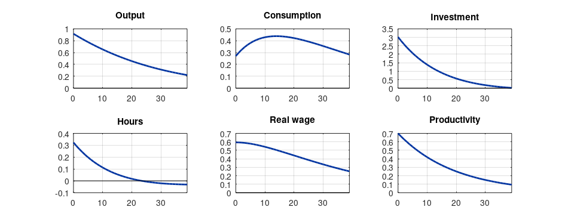

Step 1The question and the model
Can productivity shocks alone generate business cycles that look like the data? That was the question of Kydland and Prescott (1982), and the real business cycle (RBC) model is still the starting point of every DSGE model: the New Keynesian models in the later guides add frictions to exactly this core.
A representative household chooses consumption \(C_t\), hours \(H_t\) and investment to maximise
subject to \(C_t + I_t = Y_t\), \(K_{t+1} = (1-\delta) K_t + I_t\) and production \(Y_t = A_t K_t^{\alpha} H_t^{1-\alpha}\), with productivity \(\ln A_t = \rho \ln A_{t-1} + \varepsilon_t\). The equilibrium conditions are:
| Condition | Equation |
|---|---|
| Euler equation | \(\frac{1}{C_t} = \beta E_t\left[\frac{1}{C_{t+1}}\left(\alpha \frac{Y_{t+1}}{K_{t+1}} + 1 - \delta\right)\right]\) |
| Labour supply | \(\psi H_t^{\varphi} C_t = W_t = (1-\alpha)\frac{Y_t}{H_t}\) |
| Production | \(Y_t = A_t K_t^{\alpha} H_t^{1-\alpha}\) |
| Capital accumulation | \(K_{t+1} = (1-\delta)K_t + I_t\) |
| Resource constraint | \(Y_t = C_t + I_t\) |
Before writing any code
Write the model down completely: every agent's problem, every constraint, the first-order conditions and the market-clearing conditions. Count equations and endogenous variables: they must be equal. Most Dynare errors are mistakes in this step, not in the code.
Step 2Calibration
| Parameter | Value | Source or target |
|---|---|---|
| \(\beta\) | 0.99 | Annual real interest rate of about 4% |
| \(\alpha\) | 0.33 | Capital share of income |
| \(\delta\) | 0.025 | Annual depreciation of about 10% |
| \(\varphi\) | 1 | Frisch elasticity of labour supply of 1 |
| \(\psi\) | set in the steady state | Hours equal to 1/3 of the time endowment |
| \(\rho\) | 0.95 | Persistence of measured productivity (Solow residual) |
| \(\sigma_\varepsilon\) | 0.007 | Volatility of the Solow residual |
How to write it: calibration
The model is calibrated at a quarterly frequency to the U.S. economy. The discount factor of 0.99 implies an annual real interest rate of about 4 percent, the capital share is 0.33, and the depreciation rate of 0.025 corresponds to 10 percent per year. The labour-disutility parameter is chosen so that households work one third of their time in the steady state. The productivity process has persistence 0.95 and innovation standard deviation 0.007, consistent with estimates for the Solow residual.
Step 3Write the model in Dynare
// Real business cycle model. Variables are in logs, so impulse responses are percentage deviations.
var y c i k h w r a;
varexo e;
parameters beta alpha delta phi psi rho sigma_e h_ss;
beta = 0.99; alpha = 0.33; delta = 0.025; phi = 1;
rho = 0.95; sigma_e = 0.007; h_ss = 1/3;
model;
exp(-c) = beta * exp(-c(+1)) * (alpha * exp(y(+1) - k) + 1 - delta); // Euler equation (k is K_{t+1})
psi * exp(phi*h) * exp(c) = exp(w); // labour supply
exp(w) = (1 - alpha) * exp(y - h); // wage = marginal product of labour
exp(r) = alpha * exp(y - k(-1)); // rental rate = marginal product of capital
exp(y) = exp(a) * exp(alpha*k(-1)) * exp((1 - alpha)*h); // production
exp(k) = (1 - delta) * exp(k(-1)) + exp(i); // capital accumulation
exp(y) = exp(c) + exp(i); // resource constraint
a = rho * a(-1) + e; // productivity
end;
steady_state_model;
// analytical steady state: hours are fixed at h_ss and psi is backed out
r = log(1/beta - 1 + delta);
KY = alpha / exp(r);
k_h = KY^(1/(1 - alpha));
h = log(h_ss);
k = log(k_h * h_ss);
y = log(k_h^alpha * h_ss);
i = log(delta * exp(k));
c = log(exp(y) - exp(i));
w = log((1 - alpha) * exp(y) / h_ss);
psi = exp(w) / (h_ss^phi * exp(c));
a = 0;
end;
shocks;
var e; stderr sigma_e;
end;
steady;
check;
stoch_simul(order=1, irf=40, hp_filter=1600, periods=0) y c i h w;dynare rbc
STEADY-STATE RESULTS:
y 0.00509623
c -0.26283
i -1.44292
k 2.24596
h -1.09861
w 0.703231
r -3.34953
a 0
EIGENVALUES:
Modulus Real Imaginary
0.95 0.95 0
0.9531 0.9531 0
1.06 1.06 0
7.959e+15 7.959e+15 0
There are 2 eigenvalue(s) larger than 1 in modulus for 2 forward-looking variable(s)
The rank condition is verified.
MODEL SUMMARY
Number of variables: 8
Number of stochastic shocks: 1
Number of state variables: 2
Number of jumpers: 2
Number of static variables: 4
MATRIX OF COVARIANCE OF EXOGENOUS SHOCKS
Variables e
e 0.000049
POLICY AND TRANSITION FUNCTIONS
y c i h w
Constant 0.005096 -0.262830 -1.442920 -1.098612 0.703231
k(-1) 0.217624 0.553075 -0.874157 -0.167725 0.385349
a(-1) 1.243572 0.367237 4.095753 0.438168 0.805405
e 1.309024 0.386565 4.311319 0.461229 0.847794
THEORETICAL MOMENTS (HP filter, lambda = 1600)
VARIABLE MEAN STD. DEV. VARIANCE
y 0.0051 0.0120 0.0001
c -0.2628 0.0040 0.0000
i -1.4429 0.0394 0.0016
h -1.0986 0.0042 0.0000
w 0.7032 0.0079 0.0001
MATRIX OF CORRELATIONS (HP filter, lambda = 1600)
Variables y c i h w
y 1.0000 0.9088 0.9902 0.9799 0.9942
c 0.9088 1.0000 0.8417 0.8074 0.9483
i 0.9902 0.8417 1.0000 0.9982 0.9695
h 0.9799 0.8074 0.9982 1.0000 0.9529
w 0.9942 0.9483 0.9695 0.9529 1.0000How to read it
- Blocks.
vardeclares the endogenous variables,varexothe shocks,parametersthe parameters. Themodelblock contains one equation per endogenous variable. Variables dated(+1)are expectations,(-1)lags. Capitalkis the end-of-period stock, so production usesk(-1). - Logs. Writing
exp(y)wherever \(Y\) appears makesythe log of output, so all results are percentage deviations from the steady state. steady_state_model. The steady state is computed analytically, which is faster and more reliable than a numerical solver. The parameterpsiis set here so that hours equal 1/3: a standard way to calibrate a parameter to a target.steadyandcheckcompute the steady state and verify the Blanchard–Kahn conditions.stoch_simulsolves the model by a first-order perturbation and reports moments of HP-filtered variables (hp_filter=1600), comparable with HP-filtered data.
Step 4Check the steady state and the solution
names = cellstr(M_.endo_names);
fprintf('%-6s %10s %10s\n', 'var', 'log', 'level');
for j = 1:numel(names)
fprintf('%-6s %10.4f %10.4f\n', names{j}, oo_.steady_state(j), exp(oo_.steady_state(j)));
end
fprintf('\nK/Y (quarterly) = %.2f I/Y = %.3f C/Y = %.3f psi = %.3f\n', ...
exp(oo_.steady_state(4) - oo_.steady_state(1)), exp(oo_.steady_state(3) - oo_.steady_state(1)), ...
exp(oo_.steady_state(2) - oo_.steady_state(1)), M_.params(strcmp(cellstr(M_.param_names), 'psi')));
ev = abs(oo_.dr.eigval);
fprintf('Eigenvalues larger than 1 in modulus: %d forward-looking variables: %d\n', sum(ev > 1 + 1e-6), M_.nfwrd + M_.nboth);var log level y 0.0051 1.0051 c -0.2628 0.7689 i -1.4429 0.2362 k 2.2460 9.4495 h -1.0986 0.3333 w 0.7032 2.0203 r -3.3495 0.0351 a 0.0000 1.0000 K/Y (quarterly) = 9.40 I/Y = 0.235 C/Y = 0.765 psi = 7.883 Eigenvalues larger than 1 in modulus: 2 forward-looking variables: 2
How to read it
- Steady state. A capital–output ratio of about 9.4 (quarterly, so about 2.4 annually), an investment share of about 24% and a consumption share of about 76% are close to the long-run ratios of the U.S. economy. Check these ratios in every model before going further: a wrong steady state invalidates everything after it.
- Blanchard–Kahn condition. A unique stable solution exists when the number of eigenvalues outside the unit circle equals the number of forward-looking variables. Here they match, so the model is determinate.
checkstops with an error when they do not; the New Keynesian guide shows such a failure.
Step 5Impulse responses to a productivity shock
vars = {'y', 'c', 'i', 'h', 'w'};
labels = {'Output', 'Consumption', 'Investment', 'Hours', 'Real wage'};
f = figure('position', [0 0 860 330]);
for j = 1:5
subplot(2, 3, j);
plot(0:39, 100 * oo_.irfs.([vars{j} '_e'])); hold on; plot([0 39], [0 0], 'k-', 'linewidth', 0.5);
title(labels{j}); xlim([0 39]); grid on;
end
par = @(n) M_.params(strcmp(cellstr(M_.param_names), n));
subplot(2, 3, 6); plot(0:39, 100 * par('sigma_e') * par('rho').^(0:39)); title('Productivity'); xlim([0 39]); grid on;
print(f, '-dpng', '-r110', 'irf.png');
fprintf('Impact responses (percent): output %.2f, consumption %.2f, investment %.2f, hours %.2f\n', ...
100*oo_.irfs.y_e(1), 100*oo_.irfs.c_e(1), 100*oo_.irfs.i_e(1), 100*oo_.irfs.h_e(1));Impact responses (percent): output 0.92, consumption 0.27, investment 3.02, hours 0.32

How to read it
A one-standard-deviation productivity shock (0.7%) raises output on impact by more than the shock itself, because hours and capital respond. Investment moves far more than consumption: households smooth consumption and channel the temporary windfall into capital. Hours rise because the wage is temporarily high (intertemporal substitution). These are the qualitative predictions to compare with the data.
Step 6Compare the model with the data
data = csvread('us_levels.csv', 1, 1); % log output, consumption, investment, 1966Q1-2007Q4
[~, cyc] = sample_hp_filter(data, 1600); % Dynare's HP filter
sd_data = 100 * std(cyc);
cm = corrcoef(cyc); corr_data = cm(1, :);
sd_model = 100 * sqrt(diag(oo_.var(1:3, 1:3)))';
corr_model = oo_.var(1, 1:3) ./ sqrt(oo_.var(1, 1) * diag(oo_.var(1:3, 1:3))');
names = {'Output', 'Consumption', 'Investment'};
fprintf('%-12s %10s %10s %12s %12s\n', '', 'sd data', 'sd model', 'corr(y) data', 'corr(y) model');
for j = 1:3
fprintf('%-12s %10.2f %10.2f %12.2f %12.2f\n', names{j}, sd_data(j), sd_model(j), corr_data(j), corr_model(j));
end
fprintf('\nRelative volatility (sd / sd of output): consumption data %.2f model %.2f; investment data %.2f model %.2f\n', ...
sd_data(2)/sd_data(1), sd_model(2)/sd_model(1), sd_data(3)/sd_data(1), sd_model(3)/sd_model(1));sd data sd model corr(y) data corr(y) model Output 1.49 1.20 1.00 1.00 Consumption 1.22 0.40 0.86 0.91 Investment 6.35 3.94 0.91 0.99 Relative volatility (sd / sd of output): consumption data 0.82 model 0.34; investment data 4.25 model 3.29
How to read it
This is the classic RBC table. The model is judged on second moments it was not calibrated to match.
- Output volatility. The model produces about 80% of the observed volatility of output (1.20% against 1.49%) with productivity shocks alone: the original RBC finding.
- Relative volatility. As in the data, investment is several times more volatile than output (3.3 times in the model, 4.3 in the data) and consumption less volatile. The model gets the ranking right.
- Comovement. Consumption and investment are strongly procyclical in both.
- Failures. The model's consumption is far too smooth (a relative volatility of 0.34 against 0.82 in the data) and its correlations too close to one: with a single shock, everything moves together. These failures motivate the extra shocks and frictions of the medium-scale model.
Step 7Write the paper
How to write it: results
Figure 1 shows the responses to a one-standard-deviation productivity shock. Output rises on impact by more than productivity itself, as hours and, gradually, the capital stock increase; investment responds several times more strongly than consumption, reflecting households' desire to smooth consumption. Table 2 compares the model's business-cycle moments with HP-filtered U.S. data for 1966–2007. Productivity shocks alone account for most of the observed volatility of output and reproduce the ranking of volatilities: investment is far more volatile than output, and consumption less. The model, however, generates too little volatility in consumption and too much comovement among the aggregates.
Common mistakes
- Timing of capital: Dynare uses end-of-period stocks, so production uses
k(-1). Getting this wrong produces Blanchard–Kahn errors. - Comparing model moments with unfiltered data, or filtering one and not the other.
- Calibrating a parameter to a moment and then claiming the model “explains” that moment.
- Solving for the steady state numerically when it has a closed form: a wrong initial value can give a wrong steady state without an error message.